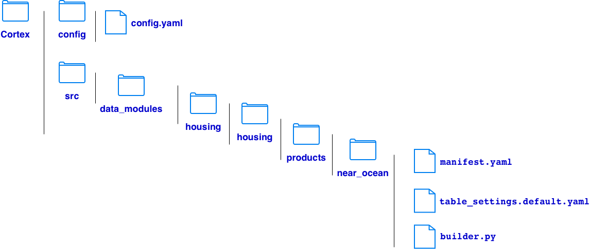
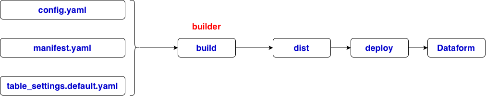

# download Cortex from https://github.com/GoogleCloudPlatform/cortex-framework
git clone https://github.com/GoogleCloudPlatform/cortex-framework.git
# config.yaml
# ===================================================
# 1. BUILD ENVIRONMENT
# ===================================================
buildEnvironment:
buildProjectId: data-508912
# ===================================================
# 2. DATA CONFIGURATION
# ===================================================
data:
# BigQuery data location
bigQueryLocation: US
# Custom namespace containing housing modules
namespaces:
- name: housing
path: ../src/data_modules/housing
# BigQuery dataset mappings
datasets:
- id: housing_source
projectId: data-508912
datasetId: test
- id: housing_target
projectId: data-508912
datasetId: test
# Modules to build
modules:
foundations: []
catalogs: []
products:
- moduleId: housing_near_ocean
modulePath: housing.housing.products.near_ocean
dataTargetId: housing_target
enabled: true
syncToKc: false
# ===================================================
# 3. DEPLOYMENT CONFIGURATION
# ===================================================
deployment:
targets:
- type: dataform
enabled: true
targetSettings:
repositoryProjectId: data-508912
repositoryRegion: us-central1
repositoryName: cortex-housing
workspaceName: dev
# manifest.yaml
# what the module is and how Cortex identifies it
displayName: Housing Near Ocean
description: >
Generates a filtered California housing table
and a housing summary table using Dataform.
category: consumption_product
type: near_ocean
# table_settings.default.yaml
# how the module's output tables are configured
common:
source:
projectId: data-508912
datasetId: test
tableId: housing
target:
projectId: data-508912
datasetId: test
filter:
column: ocean_proximity
value: NEAR OCEAN
outputs:
filteredTable: housing_near_ocean
summaryTable: housing_ocean_summary
# builder.py
# how to produce the Dataform code
# Copy existing SQLX files
# Generate new SQLX
# Modify SQLX
# Generate JavaScript
# Apply table settings
# Validate inputs
import json
import logging
import re
from pathlib import Path
import yaml
from common.builders.base import ProductBuilder
logger = logging.getLogger(__name__)
# BigQuery identifier validation.
PROJECT_RE = re.compile(r"^[a-z][a-z0-9-]*$")
NAME_RE = re.compile(r"^[A-Za-z_][A-Za-z0-9_]*$")
def validate_name(value, pattern, label):
if not isinstance(value, str) or not pattern.fullmatch(value):
raise ValueError(f"Invalid {label}: {value!r}")
return value
def generate_files(settings_file, output_dir):
"""
Generate two Dataform definitions:
1. Filtered housing table (SQLX)
2. Summary table (JavaScript)
"""
settings_file = Path(settings_file)
output_dir = Path(output_dir)
with settings_file.open(encoding="utf-8") as f:
settings = yaml.safe_load(f)["common"]
source = settings["source"]
target = settings["target"]
filt = settings["filter"]
outputs = settings["outputs"]
# Resolve and validate names from YAML.
source_project = validate_name(
source["projectId"], PROJECT_RE, "source project"
)
source_dataset = validate_name(
source["datasetId"], NAME_RE, "source dataset"
)
source_table = validate_name(
source["tableId"], NAME_RE, "source table"
)
target_project = validate_name(
target["projectId"], PROJECT_RE, "target project"
)
target_dataset = validate_name(
target["datasetId"], NAME_RE, "target dataset"
)
filter_column = validate_name(
filt["column"], NAME_RE, "filter column"
)
filtered_table = validate_name(
outputs["filteredTable"], NAME_RE, "filtered table"
)
summary_table = validate_name(
outputs["summaryTable"], NAME_RE, "summary table"
)
if filtered_table == summary_table:
raise ValueError("Output table names must be distinct")
# For this example, filter values must be strings.
if not isinstance(filt["value"], str):
raise ValueError("Filter value must be a string")
filter_value = (
"'" +
filt["value"].replace("\\", "\\\\").replace("'", "''") +
"'"
)
output_dir.mkdir(parents=True, exist_ok=True)
# ------------------------------------------
# 1. Generate the Dataform SQLX definition
# ------------------------------------------
sqlx = f'''config {{
type: "table",
database: {json.dumps(target_project)},
schema: {json.dumps(target_dataset)},
name: {json.dumps(filtered_table)},
tags: ["housing", "filtered"]
}}
SELECT *
FROM `{source_project}.{source_dataset}.{source_table}`
WHERE `{filter_column}` = {filter_value}
'''
sqlx_path = output_dir / f"{filtered_table}.sqlx"
sqlx_path.write_text(sqlx, encoding="utf-8")
# ------------------------------------------
# 2. Generate the Dataform JS definition
# ------------------------------------------
js = f'''// Generated automatically by Cortex builder.py
publish({json.dumps(summary_table)}, {{
type: "table",
database: {json.dumps(target_project)},
schema: {json.dumps(target_dataset)},
tags: ["housing", "summary"]
}}).query(ctx => `
SELECT
{filter_column},
COUNT(*) AS total_records,
AVG(median_house_value) AS avg_house_value
FROM ${{ctx.ref({json.dumps(filtered_table)})}}
GROUP BY {filter_column}
`);
'''
js_path = output_dir / f"{summary_table}.js"
js_path.write_text(js, encoding="utf-8")
logger.info("Generated %s", sqlx_path)
logger.info("Generated %s", js_path)
return [sqlx_path, js_path]
class HousingProductBuilder(ProductBuilder):
"""Generate housing Dataform actions from module settings."""
def build(self, **kwargs):
module_id = kwargs.get("module_id", "housing_near_ocean")
output_dir = kwargs.get("output_dir")
settings_file = kwargs.get("table_settings_file")
if output_dir is None:
raise ValueError("Cortex did not provide output_dir")
if settings_file is None:
settings_file = (
Path(__file__).resolve().parent
/ "table_settings.default.yaml"
)
logger.info("Building module: %s", module_id)
generate_files(
settings_file=settings_file,
output_dir=output_dir,
)
if __name__ == "__main__":
# Standalone test, without requiring Cortex.
module_dir = Path(__file__).resolve().parent
generate_files(
settings_file=module_dir / "table_settings.default.yaml",
output_dir=module_dir / "generated",
)

# GCP login
gcloud auth login
gcloud auth application-default login
gcloud config set project data-508912
# enable apis
gcloud services enable bigquery.googleapis.com dataform.googleapis.com --project=data-508912
# build in root of project
uv run cortex-build --config config/config.yaml
# deploy to Dataform
uv run cortex-deploy --config config/config.yaml
# execution on Dataform